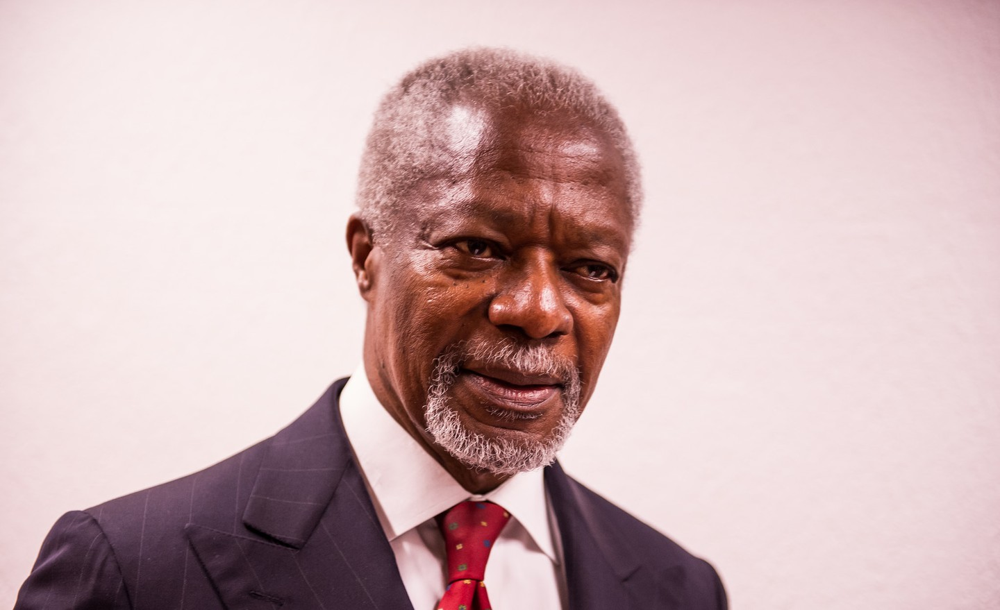

Overview of Akan naming system
The Akan people of Ghana frequently name their children after the day of the week they were born and the order in which they were born. These "day names" have further meanings concerning the soul and character of the person. Middle names have considerably more variety and can refer to their birth order, twin status, or an ancestor's middle name.
Most Ghanaians have at least one name from this system. Ghana‘s first president, Kwame Nkrumah, was born on a Saturday, while the seventh Secretary-General of the United Nations, Kofi Atta Annan, was so named for being born on a Friday. The 25-year-old popular Ghanaian-British fashion model Adwoa Caitlin Maria Aboah is Monday-born.
 Kofi AnanMale Naming
- Sunday: Kwasi
- Monday: Kwadwo
- Tuesday: Kwabena
- Wednesday: Kwaku
- Thursday: Yaw
- Friday: Kofi
- Saturday: Kwame
Female Naming
- Sunday: Akosua
- Monday: Adwoa
- Tuesday: Abenaa
- Wednesday: Akua
- Thursday: Yaa
- Friday: Afua
- Saturday: Ama
Like many cultures in the world, Ghanaians view naming of a child as a very important rite of passage. They normally pick a meaningful name since they believe the name accompanies the individual for the rest of their life. Their convention for naming is very unique compared to other cultures in the world.